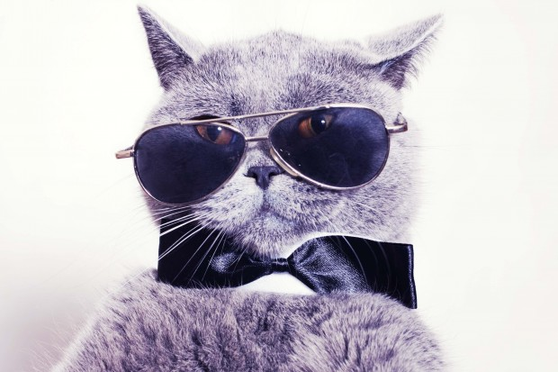
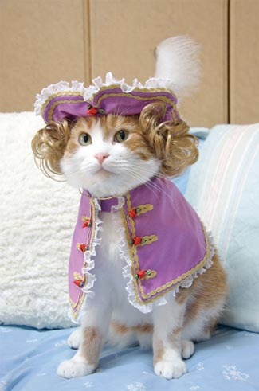
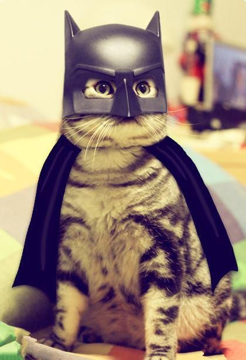
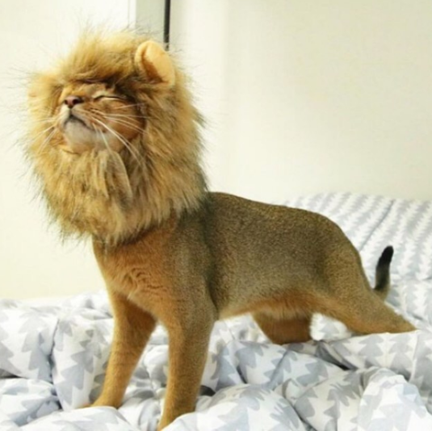

Lilly is a cool cat who embodies style, elegance, and laid-back cool. The sunglasses and bowtie tell the world, "Look out. I'm one cool cat."

Phineas is bringing back the baroque with this classic ensemble. His tricorner hat and waistcoat harken back to a more civilized time, adding an old-world charm to this cool, cool kitty.

Bruce is the night.

Every cat longs to unleash their inner beast. Here we see the monster in its fully realized, glorious form.